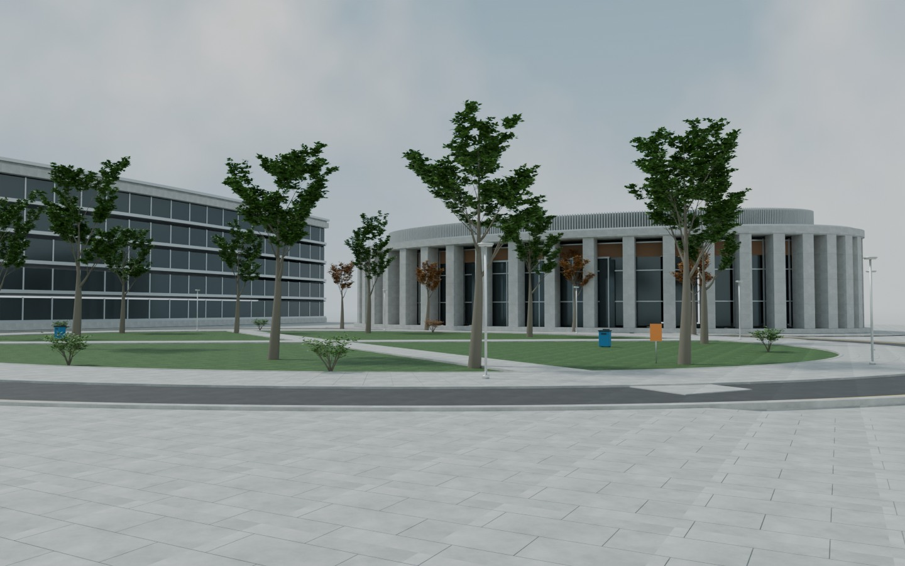

BUILDING THE SCENE
正在准备三维场景
读取本地渲染模块…
已选资产
Y UP
RECONSTRUCTION NOTES
从实拍到可浏览的场景
以可见外观、空间层次及建筑与植被关系为重点。尺度、遮挡区域和布局依据画面估计；当前不包含物理仿真，也不声明像素级一致。
查看视频相机求解记录
357 / 358 帧注册为两个独立片段；当前 CG 尚未完成坐标对齐。
- 具体资产与预设视角由场景清单提供。
Agent A/scene-20261113

BUILDING THE SCENE
读取本地渲染模块…
RECONSTRUCTION NOTES
以可见外观、空间层次及建筑与植被关系为重点。尺度、遮挡区域和布局依据画面估计；当前不包含物理仿真，也不声明像素级一致。
357 / 358 帧注册为两个独立片段；当前 CG 尚未完成坐标对齐。